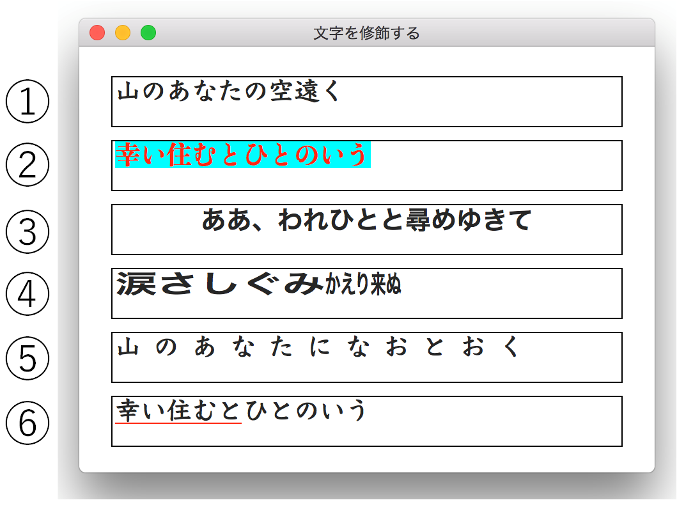
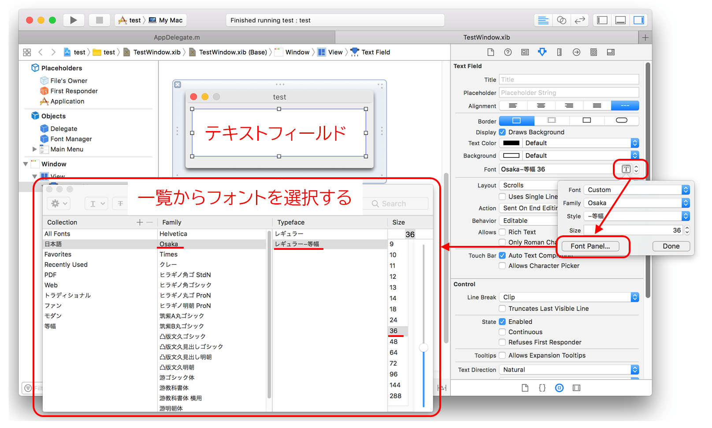
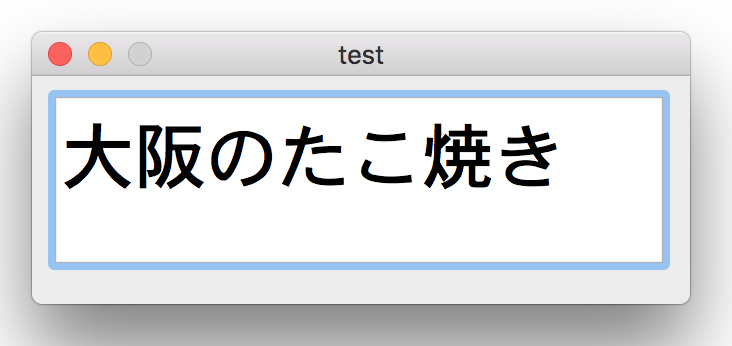

属性付き文字列 〜 NSAttributedStringクラス 〜

属性付き文字列（NSAttributedStringクラス）は、文字列と一緒に文字列を装飾する属性を保持する。
属性は、文字のサイズ、フォント、色、太字や斜体、下線や取り消し線といったものである。
属性付き文字列に属性を設定するには、属性を表すキー（文字列）と属性値（オブジェクト）の組み合わせを指定する。これは、辞書オブジェクト（NSDictionaryクラス）として記述することができる。
上記のテキストで使用した属性（キー：値）の一覧を示す
● フォント
NSFontAttributeName：NSFontオブジェクト
● 文字の色
NSForegroundColorAttributeName：NSColorオブジェクト
● 文字の背景色
NSBackgroundColorAttributeNamee：NSColorオブジェクト
● パラグラフ（水平方向の配置）
NSParagraphStyleAttributeName：NSParagraphStyleオブジェクト
● 文字の横方向の伸縮
NSExpansionAttributeName：NSNumberオブジェクト
● 文字間隔
NSKernAttributeName：NSNumberオブジェクト
● 下線のスタイル
NSUnderlineStyleAttributeName：NSNumberオブジェクト
● 下線の色
NSUnderlineColorAttributeName：NSColorオブジェクト
文字列に属性を設定する２つの方法
1. 文字列を初期化するとき同時に属性を設定する
- initWithString:attributes:
attributes引数に、属性の組み合わせを登録した辞書オブジェクト指定する。辞書なので複数の属性を指定できる。
2. 作成した文字列に対して、後から属性を追加する
文字列は、NSMutableAttributedStringオブジェクトとして作成されていること。属性は随時いくつでも追加することができる。文字列の一部分に対してのみ属性を設定することができる。
- addAttributes:range:
addAttributes引数に属性の組み合わせを登録した辞書オブジェクト指定する。
range引数に属性を設定する文字列の範囲を指定する。
- addAttribute:value:range:
属性をひとつだけ設定する。addAttribute引数に属性のキーを指定する。value引数に属性のオブジェクトを指定する。
属性の種類と設定方法
冒頭に表示したテキストについて、文字列の修飾方法の実装手順を示す。属性の設定方法は、属性を登録した辞書または、属性の組み合わせを属性付き文字列に追加する方法にした。
① フォントを指定する
② 文字の色/背景色を指定する
③ 水平方向の配置を指定する
NSParagraphStyleクラスのalignmentプロパティにより文字列の水平方向の配置（左揃え、中央揃え、右揃え）を指定する。
④ 文字列の横方向の伸縮
値が正であれば横方向に伸び、値が負であれば横方向に縮む。文字列を２つに分けて、それぞれ異なる属性（伸縮率）を設定する。
（印刷の世界では、文字の高さを低くしたものを平体、文字の幅を狭くしたものを長体という。例でいえば、前半が平体で、後半が長体となる。）
⑤ 文字の間隔
⑥ 下線を引く、下線の色を指定する
サービスクラスを作る
文字列の装飾の実装は、一からコーディングすると同じような処理を毎回繰り返すことになり、かなりの無駄である。
コンビニエンスクラスを作成して、必要最小限のコードを指定するだけで処理を済ませるのが定石である。
カレンダーアプリケーションで使用しているUATextAttributeクラスを紹介する。
属性の辞書または、属性を設定した文字列を返却するクラスメソッドである。規定値とした属性は、ユーザが記述する必要がないようハードコーディングし、ユーザが変更可能なものだけ引数で指定できるようにする。
フォントを指定する方法
フォントオブジェクトを作成するときに、フォント名を文字列で指定する。
フォント名の一覧は、NSFontManagerクラスのavailableFontsメソッドで取得することができる。リストの一部を抜粋する。ここに出力されたフォント名をそそまま指定すれば良い。
なお、フォント名は、フォントファミリー名と書体（Typeface）の組み合わせを意味する。書体は、ウェイト（太さ）やイタリック体、等幅/プロポーショナルなどスタイルに関する属性を表す。
文字の実際の見た目（グリフイメージ）を確認する方法

インタフェースビルダでテキストフィールドを作成し、ArreibuteInspectorから、フォントパネルを表示し、一覧からフォントとサイズを指定する。
アプリケーションを実行し、テキストフィールドに任意の文字を入力する。選択したフォントによる文字のイメージが表示される。インタフェースビルダで示されるフォント名とNSFontManageのavailableFontsメソッドで取得したフォント名は表現が違うことがあるが、概ね推定可能であろう。
「Osaka レギュラー-等幅」と「Osaka-Mono」
